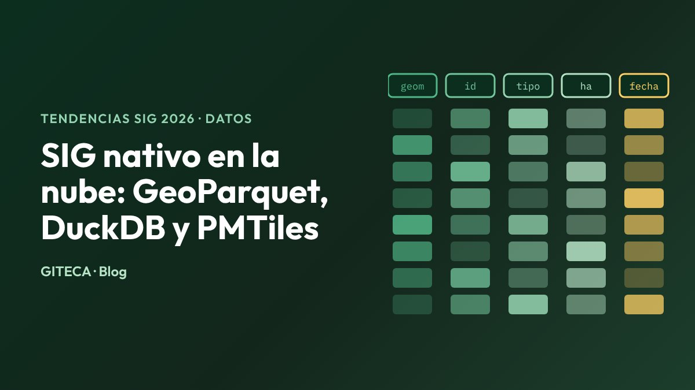

SIG nativo en la nube: GeoParquet, DuckDB y PMTiles para datos forestales grandes
Los formatos y motores «nativos en la nube» se volvieron la base del análisis geoespacial moderno. Permiten trabajar con bases enormes, como censos forestales o alertas de deforestación, desde una laptop o un navegador.

La novedad
El «SIG nativo en la nube» agrupa formatos pensados para leerse por partes, directamente desde un almacenamiento en internet, sin descargar todo el archivo ni montar un servidor de mapas:
- GeoParquet: tablas geográficas en columnas, comprimidas y rápidas de consultar. Ya es un formato estándar y los tipos geométricos llegaron de forma nativa a Parquet e Iceberg.
- DuckDB Spatial: una base de datos que corre en la propia computadora, o en el navegador, y consulta GeoParquet, Shapefile o GeoPackage con SQL.
- PMTiles y FlatGeobuf: archivos únicos de teselas o vectores que se publican en cualquier hosting estático y se cargan solo en la zona visible.
- STAC y COG: catálogos e imágenes satelitales optimizadas para leer solo el recorte que se necesita.
Por qué importa para el bosque
Las bases forestales crecen rápido: guías de transporte, censos comerciales, alertas tempranas, catastro de títulos habilitantes. Muchas instituciones las manejan en Excel o en geodatabases pesadas que solo abre un equipo con licencia. Con GeoParquet y DuckDB, un cruce de millones de registros se resuelve en segundos con una consulta SQL, y el resultado se publica como un mapa web sin pagar servidores.
Cómo lo aplicaríamos
Limitaciones y cuidados
- No reemplaza a PostGIS. Para sistemas con edición simultánea y transacciones, una base como PostGIS sigue siendo el registro oficial; GeoParquet y DuckDB brillan en el análisis.
- Rendimiento variable. Las uniones espaciales muy pesadas no siempre rinden igual que en PostGIS, y leer por internet es más lento que en disco local.
- Datos sensibles. Un archivo publicado en un hosting estático es público: no subas datos personales ni ubicaciones de especies amenazadas.